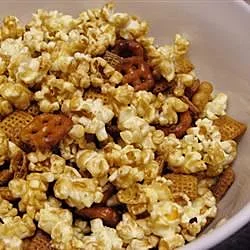

Caramel Popcorn

Great caramel popcorn for any holiday or occasion.
If you like chewy popcorn, bake less.
Ingredients
- 1 cup butter
- 2 cups brown sugar
- ½ cup corn syrup
- 1 teaspoon salt
- ½ teaspoon baking soda
- 1 teaspoon vanilla extract
- 5 quarts popped popcorn